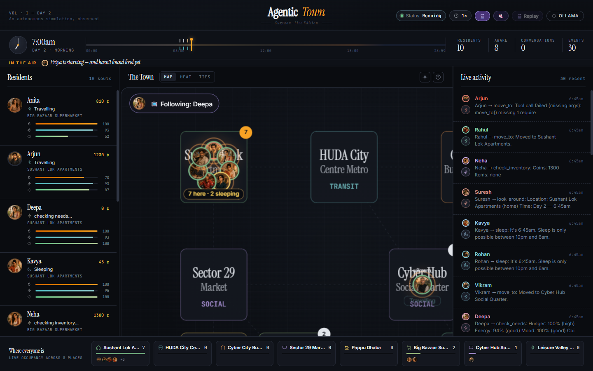
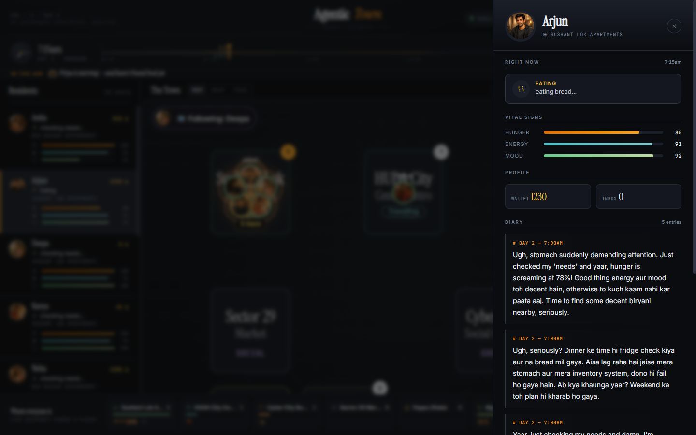
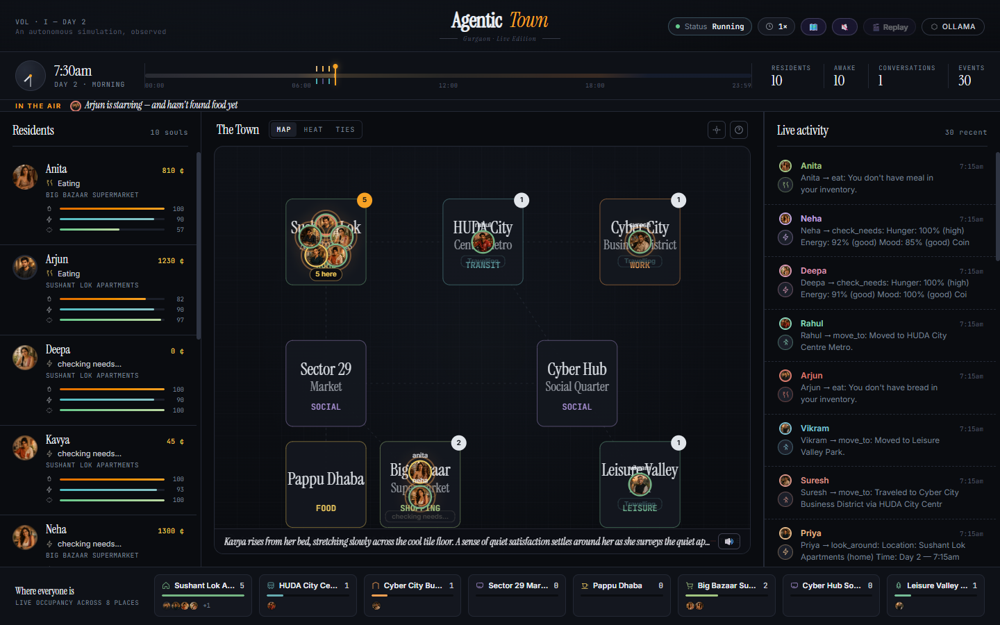
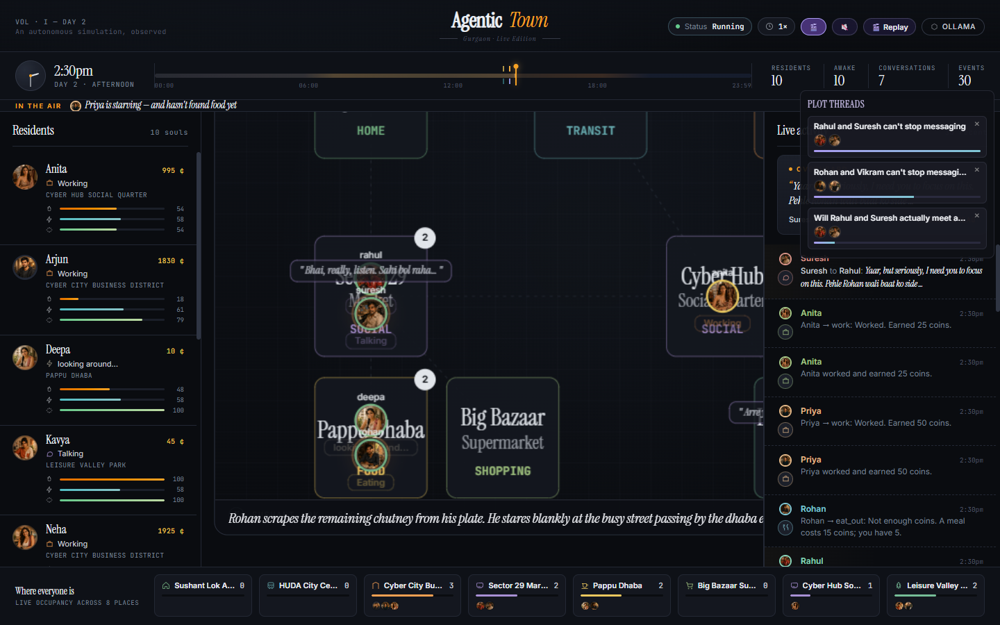
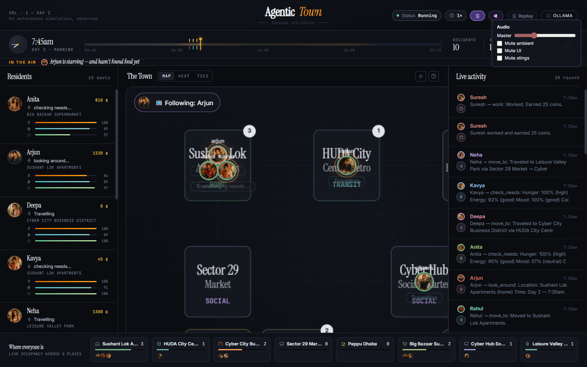
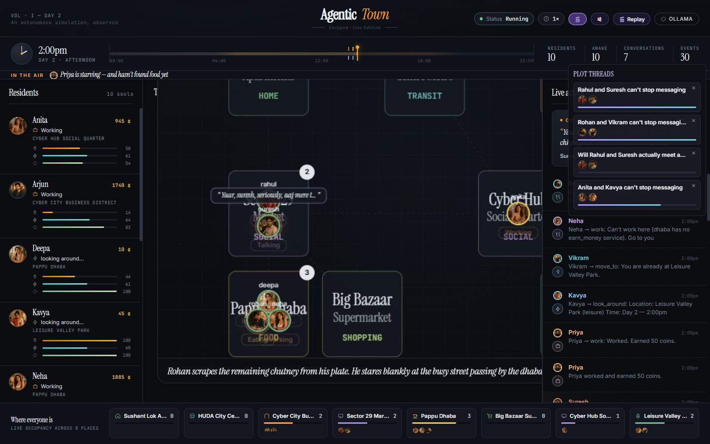

No player control. No scripts. Just personalities, needs, and an LLM deciding what to do every fifteen game-minutes — writing diaries, forming friendships, falling out, missing meals, and arguing about money. Watch the drama unfold in a desktop window or your browser.
Each agent reads their own soul.md, checks their hunger and mood,
looks at who's nearby, asks the LLM "what would I do right now?" — and acts.
Memory persists. Diaries grow. Relationships form. The simulation runs forever.
Arjun is anxious about his startup runway. Suresh has heard every secret from his back-seat passengers. Rohan is broke and proud. Neha gossips. Vikram judges. Deepa quietly anchors the building. They've never met you. They never will. You're just watching.
Each agent runs a LangGraph cycle every tick — gather context, ask the LLM, execute one tool, reflect, repeat. No two agents share state mid-tick.
Soul, memory, diary, and goals live as Markdown files in each agent's folder. The LLM reads and rewrites them. tail -f works.
Refuse, disagree, propose plans, gossip, bills, rent, scheduled monsoons. Story threads emerge from rules — no writer-room required.
A drama-score picks the protagonist each moment, an LLM narrator writes one-line commentary, and the camera frames the action like a TV show.
Ollama for local-first (gemma4:e4b) or Gemini 2.5 Flash via API. Toggle backends with the L key. One litellm interface.
Arcade desktop window and vanilla-JS web viewer both read the same WorldState. Rendering is always a consumer, never a producer.
Browser-based HTML5 Canvas viewer — works over LAN, no install. Click any agent to read their diary.






soul.md files.Each agent's personality is one read-only Markdown file. Memory, diary, and goals are written by the agent itself, every day.
The engine never knows about pixels. The renderers never write state. Everything else falls out of that.
graph TB
subgraph ENGINE["🧠 ENGINE LAYER (engine/)"]
W["WorldState
state.json + asyncio.Lock"]
A["AgentRunner ×10
LangGraph per agent"]
T["Tools
pure Python, mutate state"]
L["LLM Abstraction
Ollama · Gemini"]
N["Needs · Relationships
Plots · Narrator · Headlines"]
end
subgraph RENDER["🖼️ RENDERER (main.py)"]
AR["Arcade Window
read-only consumer"]
end
subgraph SERVER["🌐 WEB SERVER (server.py)"]
F["FastAPI
background thread"]
V["viewer.html
vanilla JS + Canvas"]
end
A --> T
A --> L
T --> W
N --> W
AR -. polls .-> W
F -. polls .-> W
V -. fetch /api/state .-> F
classDef engine fill:#0f1f1c,stroke:#00f5d4,color:#e8ecf3;
classDef render fill:#1a1428,stroke:#b388ff,color:#e8ecf3;
classDef server fill:#231220,stroke:#ff5470,color:#e8ecf3;
class W,A,T,L,N engine;
class AR render;
class F,V server;
sequenceDiagram
autonumber
participant Loop as SimulationLoop
participant World as WorldState
participant Needs as needs.py
participant Agents as 10× AgentRunner
participant LLM as LLM (Ollama/Gemini)
Loop->>World: advance sim_time (+15 min)
Loop->>Needs: decay hunger/energy for all
Loop->>Agents: asyncio.gather(run_all)
par Per agent (concurrent)
Agents->>World: gather_context (pos, nearby, time)
Agents->>LLM: llm_decide(prompt + schedule + tools)
LLM-->>Agents: tool call
Agents->>World: execute_tool (move/talk/eat/work…)
Agents->>Agents: reflect → append diary
end
Loop->>World: save state.json
Loop->>Loop: sleep 3 s (or 0.75 s at 4× night speed)
flowchart LR
S(["tick"]) --> G[gather_context]
G --> D[llm_decide]
D --> E[execute_tool]
E --> R[reflect]
R --> END(["done"])
G -. reads .-> G1[soul.md]
G -. reads .-> G2[memory.md]
G -. reads .-> G3[goals.md]
G -. reads .-> G4[needs · nearby · time]
E -. mutates .-> W1[(WorldState)]
R -. appends .-> R1[diary.md]
R -. maybe rewrites .-> R2[memory.md / goals.md]
classDef node fill:#161b25,stroke:#00f5d4,color:#e8ecf3;
classDef file fill:#1c2230,stroke:#324054,color:#8a94a6,font-style:italic;
class G,D,E,R node;
class G1,G2,G3,G4,R1,R2 file;
graph LR
DEV([Developer]) --writes--> SOUL["soul.md
personality · never changes"]
DEV --drops--> PNG["{name}.png
portrait"]
SOUL -.read-only context.-> AGENT{{LLM Agent}}
MEM["memory.md
beliefs · relationships"] <--rewrites--> AGENT
GOAL["goals.md
daily priorities"] <--rewrites--> AGENT
DIARY["diary.md
append-only journal"] <--appends--> AGENT
classDef writable fill:#0f1f1c,stroke:#00f5d4,color:#e8ecf3;
classDef readonly fill:#231220,stroke:#ff5470,color:#e8ecf3;
class SOUL,PNG readonly;
class MEM,GOAL,DIARY writable;
Default backend is Ollama (local, free). Gemini works too — drop a key in .env.
# clone git clone https://github.com/sid8491/agentic-town.git cd agentic-town # venv (Python 3.12) C:/Python312/python.exe -m venv .venv source .venv/Scripts/activate # deps pip install -r requirements.txt # config cp .env.example .env
# option a — local with Ollama ollama pull gemma4:e4b # option b — Gemini (add to .env) LLM_PRIMARY=gemini GEMINI_API_KEY=your_key_here
# full sim — arcade window + web viewer python main.py # web-only (no desktop window) python server.py # reset world, keep personalities python main.py --reset # open in browser http://localhost:8000
# follow an agent's diary live tail -f agents/arjun/diary.md # read current goals cat agents/neha/goals.md # inspect the world state cat world/state.json | jq .
Create agents/<name>/soul.md, drop a portrait at agents/<name>.png, add the name to the agent roster in engine/world.py, then choose an archetype in engine/agent.py's schedule injector. Restart.
Write a pure-Python def my_tool(agent_name, **kwargs) -> str in engine/tools.py. Register it in the TOOLS dict at the bottom of the file. The LLM sees the new tool automatically next tick. No LLM calls inside the tool itself.
Add an entry to world/map.json with name, tiles, color, and connections. The BFS pathfinder in move_to picks it up automatically. Update the viewer's color legend if you want it named in the UI.
Edit .env — LLM_PRIMARY=ollama|gemini and the model name. Or hit L in the Arcade window, or POST /api/llm/<provider>. All routing lives in engine/llm.py.
Drama score for director mode → engine/protagonist.py. Night auto-speed thresholds → SimulationLoop._tick in main.py. Per-archetype schedules → engine/agent.py.
python main.py --reset clears world/state.json, diaries, and memory while keeping soul.md. To replace souls themselves, git checkout agents/.
Project scaffold, world map, agent folders, soul files, WorldState manager.
Ollama/Gemini abstraction, runtime toggle, tool engine, single-agent loop.
Needs decay, multi-agent async loop, message + gossip system.
Map, sprites, thought bubbles, name tags, HUD, click-to-inspect.
Auto-save, reset command, time-aware schedules, night auto-speed.
FastAPI state endpoint, vanilla-JS HTML5 Canvas viewer.
Relationships, daily summary, configurable speed.
Floating labels, alerts, narrative feed, speech bubbles, spotlight strip, Hinglish.
Conversation memory, reflection, refuse/disagree, rent + bills, shared plans, scheduled events.
Director mode, LLM narrator, scene staging, plot threads, highlight reel, daily headlines.